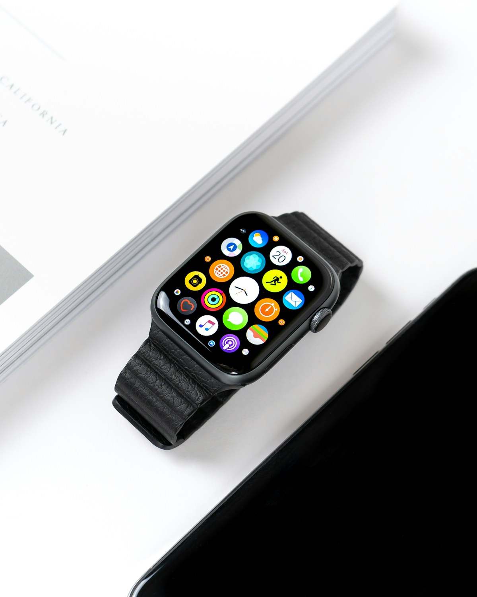

Deine Reise von 1 bis 15.
Jede Person, die durch dich Kundin wird, schaltet die nächste Stufe frei.
Gezählt wird, wer Kunde wird. Ein weitergegebener Name ist der erste Schritt. Die Stufe steigt, sobald aus der Empfehlung eine echte Zusammenarbeit geworden ist.
Zehnmal 100 €
auf den Stufen 1, 3, 4, 6, 8, 9, 11, 12, 13 und 14. Als Gutschein, Auszahlung oder Spende.

Stufe 2
Restaurantbesuch deiner Wahl
150 €

Stufe 5
Weber-Grill oder Apple Watch
449 €
Stufe 7
Goldbarren
500 €
Stufe 10
iPad Air
699 €
Stufe 15 · Finale
Mallorca mit Begleitung
2.000 €
bis zu 4.798 €
Gesamtwert der Stufen 1 bis 15, alle Geld-Boni plus die fünf großen Meilensteine.
Dein Dankeschön, deine Entscheidung. Beim Einlösen wählst du, welche Form der gleiche Wert bekommt: Auszahlung, etwas Materielles, ein Erlebnis oder eine Spende. Und wenn du jemanden einfach so weiterbringen möchtest, ohne Dankeschön, sag mir Bescheid.
 Mit der Kamera scannen
Führt direkt zu deinem persönlichen Start.
Mit der Kamera scannen
Führt direkt zu deinem persönlichen Start.

 Kai Blobel
Ein Ansprechpartner
Kai Blobel
Ein Ansprechpartner